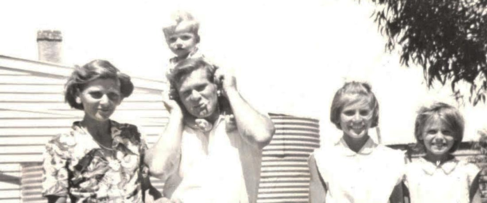
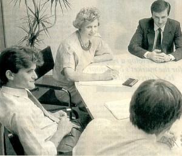
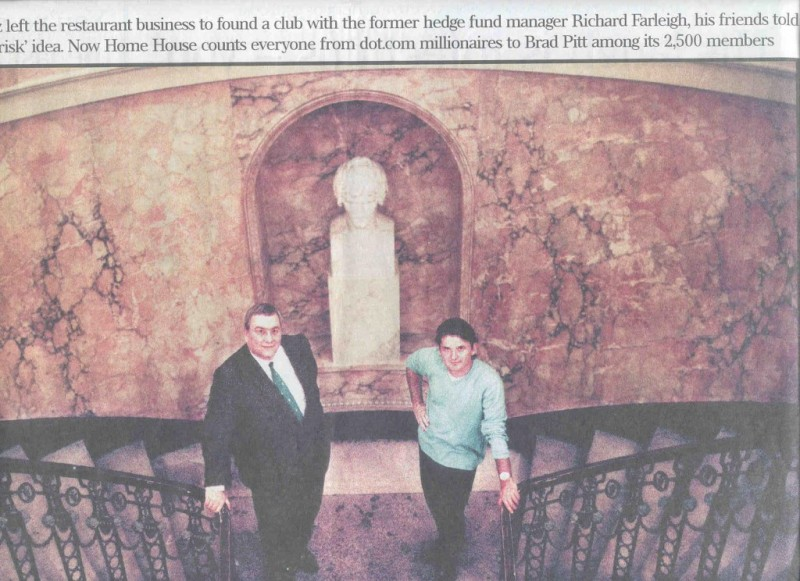

Foreword
I first met Richard in 2000 through mutual friends. He had just helped turn a rundown Georgian mansion in London into a successful private members’ club, and he was being lauded in the business pages for his support of emerging technology companies. He was, in short, an ideal candidate for a story on my Business Sunday program on the national Nine Network in Australia, particularly as, despite his success, he was not widely known in his homeland.
After the program aired on May, 2001, we were inundated with hundreds of letters and emails, many hailing his success, many more emotionally moved and inspired by his personal triumph over the odds.
Here is his story.
One of eleven children
The country town of Kyabram lies 200 kilometres north west of Melbourne in the southern Australian state of Victoria. In 1960 it had fewer than 5000 residents but it boasted the newly opened Kyabram District Memorial Community Hospital, and it was here on November 9 that Richard Buckland Smith was born.
His middle name was a nod to his ancestors who can trace their roots back five generations to the infamous Rum Corps rebellion. Such long links are important in such a young country where being a sixth generation Australian is something to be proud of. In fact the name was probably the only thing the troubled family had to be proud of at that moment in their history.
His father, Richard Geddes Smith, was probably just passing through Kyabram at the time of the birth, as his occupation is variously described as shearer, opal miner and seasonal labourer. His mother, the former Millicent Duggan, had already borne much, including seven other children; Richard was only the second boy. Before he was born, a baby sister had died after drinking bad water from a river close to where the family had camped.
In his brief time with his natural family Richard never knew what it was like to have a proper home, or even live in a normal house. They travelled the countryside in an old truck with all the children in the back open to the elements. Rodney Smith, who was eight when his brother Richard was born, recalls when the weather was bad they would all sing “rain rain go away, let us live in a house one day”. A tent was carried in the truck to shelter them all when they next made camp.
Rodney does not dwell on the unpleasant aspects of their childhood except to concede he suffered a fractured skull once courtesy of his alcoholic father. There’s no doubt it was a violent childhood as Richard reluctantly recalls his very first memory is one of “fear”.
When Richard was barely two years old, all the children were taken into care by the State. The fact that so many children were taken from their parents indicates how appalling, even then, the authorities regarded their situation. Being the 1960s, the unenlightened Australian social welfare system made no attempt to keep the children together. They were all split up, never to be reunited as a family. Somewhat bizarrely, his parents went on to have three more children, making Richard one of eleven.
Foster Child
Probably because he was still only a baby, Richard did not have to spend too long in the home as he was soon taken into foster care by Marjorie and Keith Farleigh from Peakhurst in Sydney’s south-western suburbs.
Marjorie’s first impression of her new son was that “he was a lovely little boy”. But even though she thought he looked healthy, he soon came down with a terrible bout of measles. During the illness one of his eyes “turned” and he was forced to wear a patch. Richard was confined to a darkened room with daily visits from the doctor. It would take two operations to correct the problem and by then he was five and already at school.
The Farleighs were under the impression they were only minding Richard for a few months until his parents wanted him returned. In fact Marjorie kept his bag and all his clothes packed and ready for when they sent him back. But she decided this delicate little boy needed her, so the next time the welfare officer visited, she informed him “Richard will be staying”.
Apart from one strained reunion when he was four, Richard had no contact with his natural family while growing up. While the Smiths had three other children, some of whom they simply gave away, as well as the seven who were fostered out at the same time as Richard, it was not until he was an adult that he made contact with his other siblings.
His mother died in the 1990s and he lost track of his father – in fact the last time he recalls seeing him was a chance meeting at a Sydney railway station where his itinerant father was sitting on a bench with his harmonica and swag.
While it’s clear Richard was lucky in finding a stable home with a loving foster mother and two caring foster brothers, Peter and Ian, his relationship with his foster father was never close.
Backward Child
Richard’s first kindergarten teachers placed him in the lowest class as they misinterpreted his chronic shyness and reluctance to speak as a sign of being backward. A turning point came in Year 5 at Peakhurst Primary school when he was about eight years old and was lucky enough to get into the class of a teacher called Jan Walker. She is still at Peakhurst, a principal these days, and recalls her first impressions of Richard as being small for his age and very shy, but even then she recognized his aptitude.
She remembers: “He was a ghost in class and his self-esteem was not great. He was not doing well in English, but he was far ahead in mathematics and I told him – you have a lot of potential. You haven’t reached it yet and you won’t do it for a long time, but you’re going to do well”.
It was after he entered Narwee Boys High that another important turning point came for the introverted youngster. At the age of 12 his brother Peter taught him to play chess. It was to change his life.
Chess, economics, and maths
“I was pretty unhappy the whole time I was at high school, but chess made me feel a bit better.” Richard says, “Suddenly I really started not to believe the negative things I felt about myself.”
For Richard, the game that started out as hobby soon became a passion and he quickly rose to the rank of Junior State Champion and a whole new life opened up, as he travelled the country attending chess tournaments, making new friends and finding a previously unknown confidence in his ability. Years later he would represent Bermuda and Monaco in the Chess Olympics.
After high school Richard decided to study economics at the University of New South Wales, and by topping an exam he won a generous scholarship from the Australian central bank. He graduated with first class honours in economics and econometrics but decided against doing a PhD, and chose instead to accept a job offer from the leading Australian investment bank of the time, Bankers Trust Australia.
Investment Banker
Still shy and lacking confidence, the 23 year old began working in the derivatives business for the then CEO who reportedly told colleagues he doubted the youngster would ever succeed and that “if he makes a buck for the bank, I’ll walk backwards to Bourke”.
Richard ended up becoming the bank’s biggest single money earner.
In his 1999 book, One of a Kind: The Story of Bankers Trust Australia 1969-1999, writer Gideon Haigh described Richard as “one of the most fascinating characters” to pass through the investment bank:
“As he began taking more views and more risks, Farleigh’s earnings and reputation grew. He evolved some first principles of trading. Markets tended to over-react in the short-term and under-react in the long-term. Investors tended to work off price rather than fundamentals.
He was militantly against chance. He was also out of sympathy with other trading schools reliant on data mining and regression analysis. His modus operandi was forward-looking – if a, then b, suggesting c – and his mentality that of a purist:
‘I hated it if you put a position on and it just happened to work, because I felt that left you with nothing for next time. I didn’t like charts, either. That was hocus-pocus. I was a fundamental trader. That’s much harder than being a technical trader.’ ”
In the book, Richard’s former boss, Bruce Hogan recalls: “Richard always had a very clear view of how the market would unfold. And, when it didn’t go according to expectations, his disciplines getting out were intense. Even when Richard made losses, I was always impressed with the rigour of his post-mortems. Was it a bad decision? Or was it actually still a good risk-return decision where something of a lower probability happened?”
By 1993 Richard was in his early 30s and earning a seven figure sum as the star trader, when he was head-hunted for a powerful and secretive international hedge-fund based in Bermuda. On this idyllic island tax haven he was able to refine the crucial trading style which he had developing at Bankers. He described his three years here as “trader’s heaven”.
Retirement at 34
Here he did well enough to retire to Monaco at only 34 with his then wife Sharon and baby son Thomas. From this tiny tax haven filled with wealthy individuals from around the globe, he began to look for other opportunities to make money outside the strict constraints of the trading floor. So he turned his hand from currencies and interest rates to UK tech stocks and in the following years he backed over fifty early stage companies.
By the time the “tech wreck” began in 2000, Farleigh had been investing in technology for five years. While he was hit by inevitable and difficult losses, his earlier profits provided him with a crucial buffer, and with the recovery of the market, some of his companies now read like a who’s who of new market listings in UK technology.
Home House
While he was pursuing this investment activity, another, totally different opportunity presented itself in the form of Home House. This architectural masterpiece, which had once housed the French Embassy during the Revolution, was on a list of the world’s 100 endangered buildings. The idea was to restore the building and to make a fantastic private members’ club.
“It would be nice to be an Australian saving one of the Pommys’ endangered buildings” he said with a touch of the larrikin.
And it worked. The club soon became the most sought after venue in London, with a celebrity filled membership list including Madonna and a host of numerous high profile functions including a big Brit Awards after-party. Even though Richard and his partners sold out of the club in 2004 he still maintains strong ties and visits frequently.
Dragons' Den
Richard was selected in 2006 to appear as an investor on the British version of the business-related game show Dragons’ Den for the show’s third and fourth series. Richard said he would be seeking further investments through the show, saying he was looking to “hopefully uncover the next big thing”.
His appearances on the show echo those of former dragon Doug Richard in standing out by always trying to offer constructive advice to contestants, even when not interested in investing, as opposed to negative comments often offered by some of his fellow dragons. He gradually became the popular dragon on the show, mainly due to the fact he was arguably the one dragon who made the most offers compared with the other dragons. One of the most successful businesses out the Den was Levi Roots’ Reggae Reggae Sauce which was backed by Richard and Peter Jones. Richard sold his stake in the business for a ten-times return about a year later.
After the Den
Richard has continued to invest in and assist new ventures. For example, he is a major shareholder in Innovative Physics, providing world class radiation detection equipment, Clearspeed Technology Plc for high powered computing, Oxonica Plc, an Oxford University spin out specialising in bio-diagnostics and skin care, and Chez Amour, an exclusive dating service. He has recently sold out of the very successful Net-A-Porter company. He is an in demand public speaker with a very casual, humorous style. He speaks either about his life and motivation, or the highs and lows of his business experiences, or about investment strategies from his book.